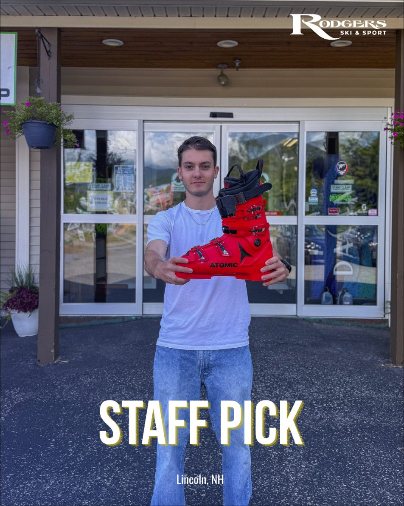

Custom fitting and race prep from Masterfit and Sidas certified fitters. Full fitting and FIS and USSA prep in Lincoln; heat molding, punches and grinds at both stores.
Why fit is everything
A boot that fits is the difference between a good day and a great one. Here is how a fitting runs.
Assess
Feet, stance, and how you actually ski.
Select
Shell fit first, from Atomic, Nordica, Salomon, Dalbello, Fischer, Head, Tecnica and Lange.
Build
Footbeds, heat molding, punches, canting, lifters.
Prove
Ski it. Come back and we adjust until it’s right.

Race boots, fitted by people who race
FIS boot prep, USSA boot prep, canting, stance and alignment and lifters, on race boots from every brand we carry. Denis’s pick this fall: the Atomic Redster 130 World Cup. “A race-focused shell and narrow World Cup fit that delivers exceptional power, precision, and edge control for aggressive skiing.”
Appointments recommended
Plan on 60 to 90 minutes for a full fit; race builds run longer. Appointments are required for custom race work. Bring your current boots, footbeds if you have them, and the socks you ski in.